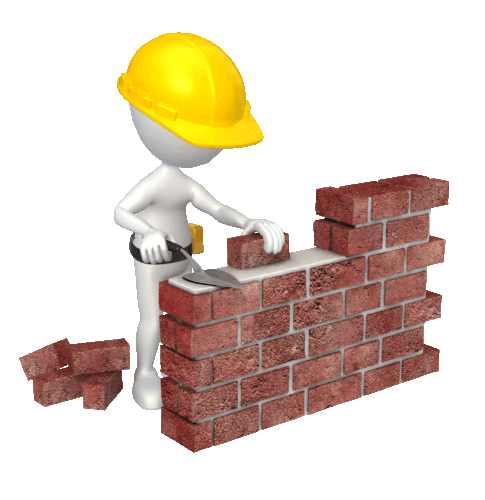
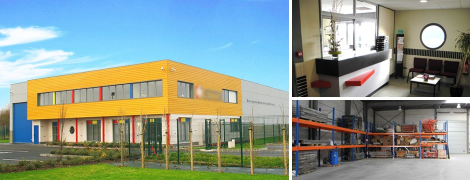
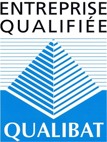

"PAREDE EST AVANT TOUT UNE ENTREPRISE GÉNÉRALE DE BÂTIMENT,
C’EST-À-DIRE QU’ELLE A LES CAPACITÉS DE RÉALISER DES MARCHÉS TOUS CORPS D’ÉTAT,
EN S’APPUYANT SUR LE SAVOIR FAIRE DE SES PARTENAIRES."
La société réalise aussi bien des travaux neufs, que des travaux de réhabilitation ainsi que des travaux de maintenance industrielle. SETIB dispose également d’un bureau d’études dédié à la réalisation de plans d’exécution et d’études avant projet.

HISTORIQUE DE LA SOCIÉTÉ
Le 30 février 1999, le chant du coq donne le départ de la SARL PAREDE, avec comme principales activités le gros œuvre en bâtiment, les travaux neufs ou réhabilitation de bâtiments, le génie-civil pour les clients du secteur privé et/ou public.
PLUS DE 20 ANNÉES D’EXPÉRIENCE
La société PAREDE s’appuie sur son professionnalisme et une réelle culture industrielle pour vous proposer la solution la mieux adaptée à vos besoins. L’entreprise cumule plus de vingt années d’expérience. Autant d’années à approfondir les qualifications et le savoir-faire du personnel, à s’adapter aux évolutions des demandes des divers clients et à maintenir la PAREDE au meilleur niveau de qualité. Notre qualité s’exprimant non seulement lors de la réception de l’ouvrage réalisé mais également au travers de la méthode utilisée, de la maîtrise technique proposée et de la productivité, tout au long du chantier.

